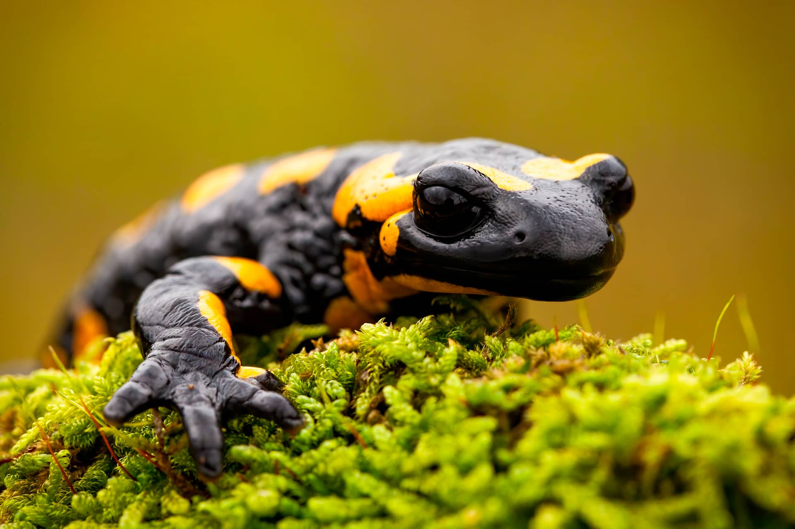

Descripción de su hábitat y estilo de vida:
Las salamandras viven en zonas húmedas o umbrías con vegetación mojada, bajo la hojarasca y siempre cerca de algún punto de agua. Necesitan estar cerca del agua por dos motivos. Uno es que su piel se deseca rápidamente y el otro es que la necesitan para la reproducción. Las salamandras son el único anfibio que no pone huevos, pare crías vivas. El nacimiento de las crías se hace siempre en el agua Una de las cosas más asombrosas de los anfibios es su capacidad para cambiar de forma en un momento dado de su vida.
Características: